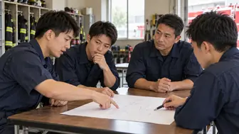

CATEGORY / 119VOICE
119VOICE
現場の声・読者投稿
掲載記事：2件

経験を伝えるだけでなく、考える力を育てる
田中英樹著『消防士のリーダーシップと流儀119選』を読んで考えた、小隊長の在り方。
若手消防士5人に聞いた本音
リアルな悩みと、未来への希望に耳を傾ける。
連載は連載一覧からもご覧いただけます。
CATEGORY / 119VOICE
現場の声・読者投稿
掲載記事：2件

田中英樹著『消防士のリーダーシップと流儀119選』を読んで考えた、小隊長の在り方。
リアルな悩みと、未来への希望に耳を傾ける。
連載は連載一覧からもご覧いただけます。